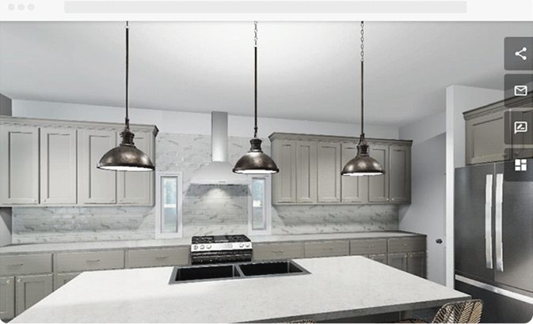

Projects
Scalable Home Visualization Platform - Unity 2019 to Unity 6 Migration
Led a large-scale migration of 1000+ runtime-loaded assets from Unity 2019 to Unity 6 HDRP for a production home visualization platform serving hundreds of customers and thousands of concurrent users. Designed and implemented a robust asset bundling pipeline to solve shader and HDRP compatibility issues, and built an automated testing system to validate asset upgrades across the entire migration.
Skills: Unity 6, HDRP, Asset Bundles, Shader Optimization, C#, Automated Testing, Performance Optimization, Cross-Platform Development, Team Collaboration.
Cross-Platform 3D Visualization and Inspection Tool

Developed and shipped a cross-platform (web, desktop, VR) 3D visualization and inspection tool using Unity and WebGL for the Keyport Naval Undersea Warfare Center. This tool enabled detailed breakdown and inspection of complex mechanical assets, including metadata visualization derived from CAD models. Developed automation tools that streamlined the integration of new assets into the application, significantly reducing development time and effort.
Skills: Unity development, WebGL, VR development, 3D visualization, data visualization, automation tools, cross-platform development, CAD integration.
Software Demo Video Link (Public Release Version)Data Integration and Automation System for Naval Analytics

Developed and shipped a robust data integration and automation system for NAVSEA, enabling real-time data availability for analysts. This involved designing and implementing a SQL database, automating data collection from diverse sources (including web APIs, web scraping, and external databases), and creating optimized queries and views for use in data visualization tools. Successfully managed large and complex datasets, ensuring data quality and accessibility. Collaborated with stakeholders to understand their needs and deliver effective solutions within system constraints.
Skills: .NET Core development, SQL database design and development, data integration, data automation, web scraping, API integration, PowerShell scripting, data analysis, stakeholder collaboration.
Object Pooling

This project implements a robust and efficient object pooling system using C# and Unity, designed to
optimize
performance by reducing costly object instantiation and garbage collection. Leveraging .NET
object-oriented
principles, it features a generic ObjectPool class, an abstract
PoolableObject
base class for inheritance, and a centralized PoolManager for streamlined access and
management. A
practical, time-based example illustrates its effectiveness. This design enhances performance, promotes
code reuse, and
demonstrates solid software engineering practices applicable beyond game development.
Behavior Tree AI System

This project showcases a C# behavior tree data structure I developed and implemented for animal AI within the Unity Game Engine. Built using .NET design principles, it also utilizes a blackboard architecture to manage AI state and decision-making, enabling more dynamic and reactive behaviors in the environment.
GitHub Link | YouTube VideoChess App with React.js and Node.js

A full-stack chess application built with React and Node.js that integrates react-chess for the interactive board UI, chess.js for game rules and validation, and a backend Stockfish AI engine for strong computer opponent moves. Features custom React components for game setup, time controls, endgame overlays, and AI bot selection. Designed primarily for Linux, but easily adapted to Windows with alternate Stockfish binaries. This project highlights clean integration of third-party chess libraries, asynchronous AI processing, and modern React state management.
GitHub Link | Deployed Website Link